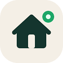

Job boards in Denmark
17 job boards and aggregators based in or serving Denmark: 5 headquartered there and 12 based elsewhere that serve it. 16 have facts checked against their own pages or official sources.
Most prominent by web link popularity: Novoresume, The Hub, Codeable, Jobindex.
| Board | Prominence | Type | HQ | Language | API | Partner program |
|---|---|---|---|---|---|---|
| Established #20,616 | Career services provider | Denmark | Not recorded | API status unknown | unknown | |
| Established #43,748 | Niche job board | Not recorded | Not recorded | API status unknown | unknown | |
| Established #72,162 | Freelance marketplace | Denmark | Not recorded | API status unknown | yes | |
| Established #78,809 | Job board | Denmark | Danish | Partner-only API | yes | |
| Small #146,680 | Government job site | Denmark | English | API status unknown | unknown | |
| Small #190,397 | Government job site | Denmark | Danish | API status unknown | unknown | |
| Not comparable | Niche job board | Not recorded | Not recorded | API status unknown | unknown | |
| Not in top 1M | Niche job board | Not recorded | Not recorded | API status unknown | unknown | |
| Not in top 1M | Job board | Not recorded | Not recorded | API status unknown | unknown | |
| Not in top 1M | Niche job board | Not recorded | Not recorded | API status unknown | unknown | |
| Not in top 1M | Niche job board | Not recorded | Not recorded | API status unknown | unknown | |
| Not in top 1M | Niche job board | Not recorded | Not recorded | API status unknown | unknown | |
| Not in top 1M | Job board | Not recorded | Not recorded | API status unknown | unknown | |
| Not in top 1M | Niche job board | Not recorded | Not recorded | API status unknown | unknown | |
| Not in top 1M | Job board | Not recorded | Not recorded | API status unknown | unknown | |
| Not in top 1M | Niche job board | Not recorded | Not recorded | API status unknown | unknown | |
 | Not in top 1M | Niche job board | Not recorded | Not recorded | API status unknown | unknown |